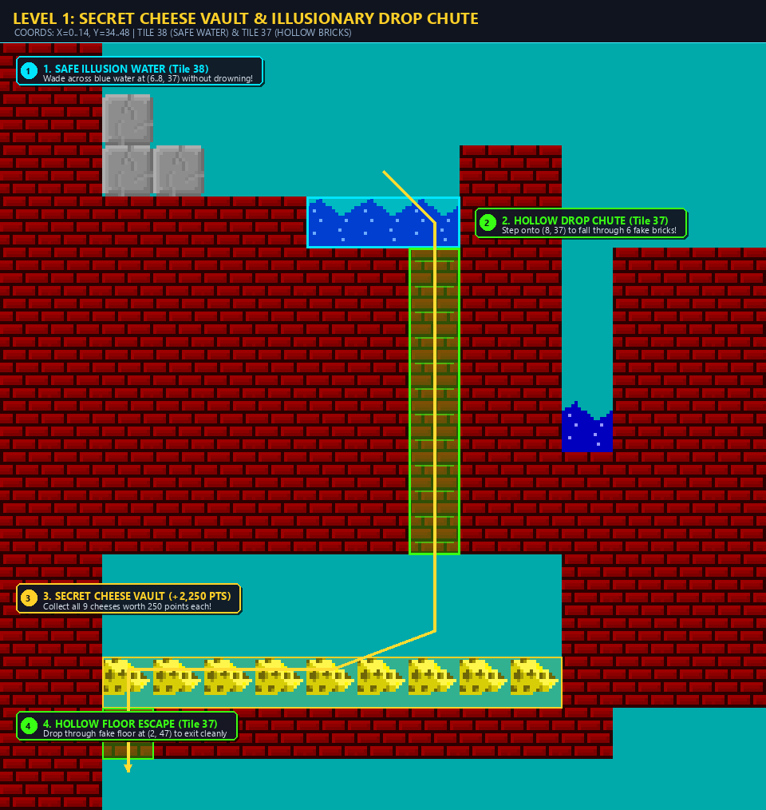

Secret 1 — Level 1
The Subterranean Cheese Vault
Hidden right inside the first stage is an underground bunker packed with five high-value cheese wedges worth 1,250+ bonus points!
-
1Start & Climb: From your starting position on the bottom-left floor, hop up the staggered brick ledges along the far left wall until you reach the upper reservoir platform.
-
2Cross the Safe Water: At the right end of this upper ledge sits a shallow blue water pool. Jump straight in! This pool is an illusion and will not drown you.
-
3Drop Down the Secret Chute: Walk into the brick wall on the right side of the pool. The bricks are hollow! You will drop down a vertical hidden shaft directly into the sealed vault.
-
4Collect & Escape: Grab the cheese wedges and coins, then walk onto the single false floor tile at the bottom-left of the vault to drop safely back onto the main floor.